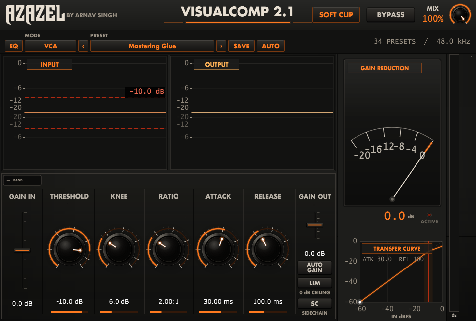
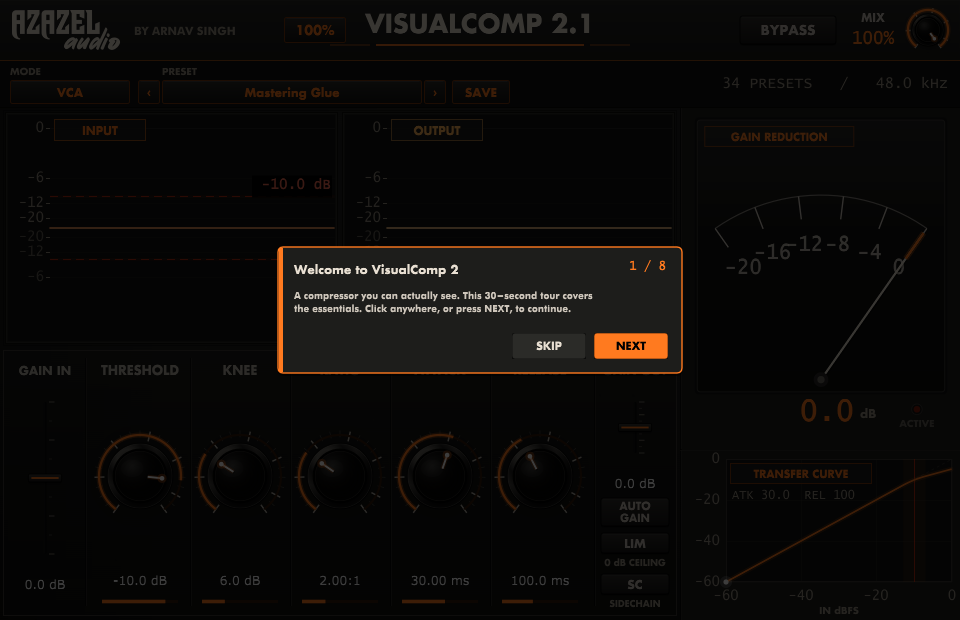
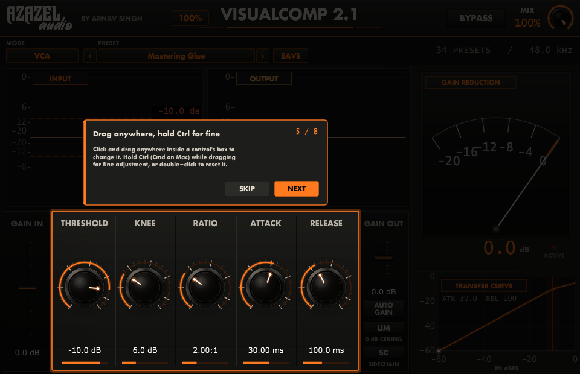
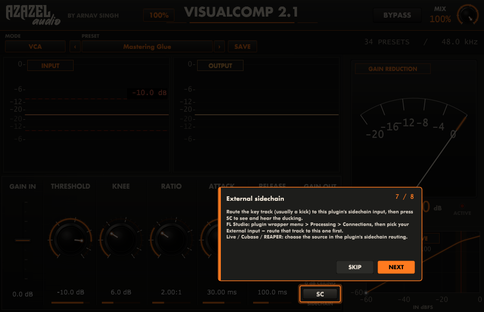
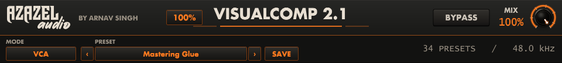
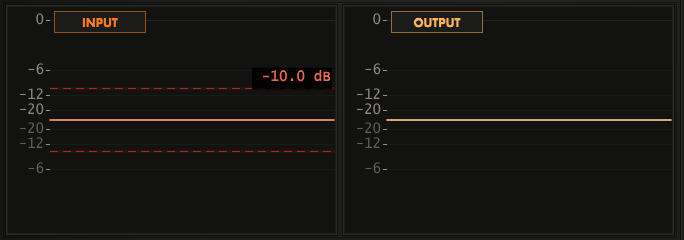
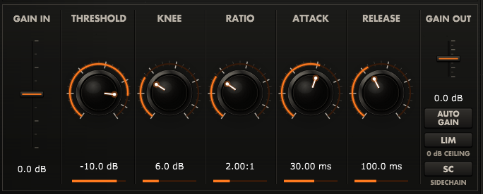
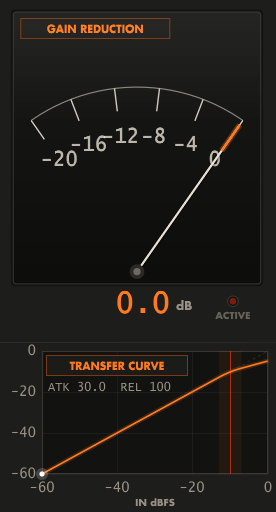
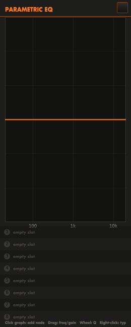
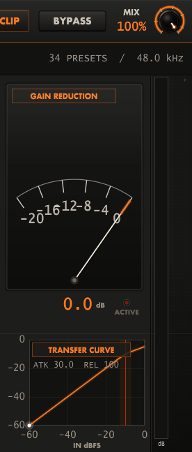

| 01 | Welcome & Design Philosophy | 3 |
| 02 | Installation — Windows & macOS | 4 |
| 03 | The Guided Tour | 5 |
| 04 | Interface Map | 7 |
| 05 | The Header & Preset Strip | 8 |
| 06 | Using the Controls | 9 |
| 07 | The Waveform Displays | 10 |
| 08 | The Dynamics Section | 11 |
| 09 | Detector Circuits | 13 |
| 10 | Sidechain — Routing in Your DAW | 14 |
| 11 | Metering | 16 |
| 12 | Gain Staging, Auto Gain & Limiter | 17 |
| 13 | Preset Library — All 34 Presets | 18 |
| 14 | Saving Your Own Presets | 20 |
| 15 | Recipes | 21 |
| 16 | Troubleshooting | 22 |
| 17 | Version 2.1 — New Tools | 23 |
| 18 | Specifications & Credits | 25 |
Compression is the most powerful process in mixing and the hardest to learn, because with most compressors you cannot see what is happening. You turn a knob, something changes — maybe — and it takes years to build the ear that connects a number to a result.
VisualComp 2.1 is built on one idea: if you can see compression working, you can master it. Two oscilloscope displays show your signal before and after processing, with the threshold drawn straight across the waveform. Set the attack too slow and you will see the transient escape. Set the release too fast and you will see the pumping.
Input Gain → detector (internal or external sidechain) → gain reduction with your chosen circuit → dry/wet Mix → Auto Gain → Output Gain → optional 0 dB ceiling limiter. Metering and both waveform displays are tapped after the wet/dry blend, so what you see is what leaves the plugin.
Open the Windows folder and run Install VisualComp 2.1.bat. Windows
will ask for administrator permission, which the installer needs in order to write to the shared
VST3 folder. It installs:
C:\Program Files\Common Files\VST3\C:\Program Files\Azazel Audio\VisualComp 2\Then open your DAW and rescan plugins.
FL Studio: Options → Manage plugins → Find more plugins.
Ableton / Cubase / Studio One / REAPER: rescan in preferences.
The plugin appears as VisualComp 2, manufacturer Azazel Audio, category Dynamics.
If you prefer not to run the installer, copy the VisualComp 2.1.vst3 folder from the
Windows folder into C:\Program Files\Common Files\VST3\ yourself, and run
VisualComp 2.1.exe from wherever you like.
macOS plugins must be compiled on a Mac. The Mac folder contains the complete
source and a one-command build script.
Mac folder to your Mac.xcode-select --installbrew install cmakecd Mac/Source/build-macoschmod +x build.sh && ./build.sh~/Library/Audio/Plug-Ins/VST3/. Rescan plugins in your DAW.The plugin is not code-signed. If your DAW refuses to load it, clear the quarantine flag:
xattr -dr com.apple.quarantine ~/Library/Audio/Plug-Ins/VST3/"VisualComp 2.1.vst3"
| Item | Windows | macOS |
|---|---|---|
| Plugin | C:\Program Files\Common Files\VST3\ | ~/Library/Audio/Plug-Ins/VST3/ |
| Standalone | C:\Program Files\Azazel Audio\VisualComp 2\ | (built alongside the plugin) |
| User presets | Documents\Azazel Audio\VisualComp 2\Presets\ | ~/Documents/Azazel Audio/VisualComp 2/Presets/ |
The first time you open VisualComp 2.1, an eight-step tour walks you through the panel. Each step dims the interface, spotlights one area and explains it in a sentence or two.


If you skip the tour it will not appear again. To see it any time, click the Azazel Audio logo in the top-left corner. The logo menu offers Show Help, which restarts the tour from step one, and Visit azazelaudio.com. The "seen" flag is stored per user, so the tour appears exactly once no matter how many instances you load.
| # | Step | In short |
|---|---|---|
| 1 | Welcome | What the plugin is and how the tour works |
| 2 | Presets | Browse, step through with the arrows, save your own |
| 3 | Circuit | VCA, FET, Optical and Tube in one line each |
| 4 | Displays | Input vs output, and the dashed threshold line |
| 5 | Controls | Drag anywhere in a box; Ctrl for fine; double-click to reset |
| 6 | Meter | Reading gain reduction, and how much to aim for |
| 7 | Sidechain | Routing the key signal, including the FL Studio steps |
| 8 | Help | Where to find the tour and the website again |


Click to choose the detector circuit. Each entry names its typical use. The choice is saved with your project and with presets. See section 09.
Blends the compressed signal against the untouched input. At 100 % you hear only compressed signal. Lowering it produces parallel compression: heavy compression underneath the natural dynamics, which raises the quiet detail without flattening the peaks.
Passes audio through untouched and resets metering. The button lights red so the panel state is unambiguous at a glance.
Scales the entire interface. The setting is remembered per instance and restored with your project.
| Zoom | Panel size | Suited to |
|---|---|---|
| 50 % | 480 × 310 | Small laptop screens, tight layouts |
| 70 % | 672 × 434 | 1080p with several plugins open |
| 100 % | 960 × 620 | Default — designed size |
| 150 % | 1440 × 930 | 1440p and 4K displays |
| 200 % | 1920 × 1240 | 4K, or detailed waveform work |
Every control in VisualComp 2.1 responds the same way, and the rules are worth learning once because they make the plugin considerably faster to operate than a conventional interface.
Each parameter owns the whole rectangular area around it — the label, the empty space and the value read-out are all part of the same target. Click and drag anywhere inside a parameter's box and it responds. You never have to aim precisely at the knob, which matters at small zoom levels and on a trackpad.
Drag up to increase, down to decrease.
Hold Ctrl (Cmd on macOS) before you begin dragging and the control becomes roughly eight times less sensitive. This is how you set an attack of 12.4 ms rather than "somewhere near twelve", or trim a threshold by a few tenths of a decibel.
Double-clicking any knob or fader returns it to its default value. Useful when an experiment has gone somewhere strange and you want a known starting point without reloading the preset.
| Gesture | Result |
|---|---|
| Drag anywhere in the box | Adjusts that parameter |
| Ctrl (Cmd) + drag | Fine adjustment, ~8× more precise |
| Double-click | Resets the parameter to its default |
| Mouse wheel over a control | Steps the value up or down |
Beneath each of the five main read-outs is a thin orange bar showing where that control sits in its full range. It gives you an instant read of the whole panel's state from across the room — useful when comparing presets, since the bar pattern is recognisable at a glance.

| What you see | What it means | What to do |
|---|---|---|
| Peaks poking well above the dashed line | Working range is healthy | Nothing — normal operation |
| Nothing reaches the dashed line | No compression at all | Lower THRESHOLD or raise GAIN IN |
| Output looks like a flat sausage | Over-compression; dynamics gone | Raise THRESHOLD, lower RATIO, or reduce MIX |
| Sharp spikes survive on the output | Attack too slow to catch them | Shorten ATTACK, or engage LIM as a safety net |
| Output envelope visibly wobbling | Release chasing the material | Lengthen RELEASE |
Tip: toggle BYPASS while watching the output display. The difference in envelope shape between the two states is the clearest possible picture of what your settings are doing.

−60 to 0 dB / default −10 dB
The level above which compression begins. Signal below it passes untouched; signal above it is reduced according to the ratio. This is your primary control over how much compression happens — watch the dashed line move across the input display as you turn it.
1:1 to 20:1 / default 2:1
How firmly signal above the threshold is reduced. At 4:1, four decibels of input above the threshold become one decibel of output.
| Ratio | Character | Typical use |
|---|---|---|
| 1.5:1 – 2:1 | Gentle levelling, nearly transparent | Mastering, mix bus, glue |
| 3:1 – 4:1 | Clear, musical control | Vocals, drum bus, guitars |
| 6:1 – 10:1 | Firm, obvious compression | Bass, rap vocals, taming peaks |
| 12:1 – 20:1 | Limiting territory | Parallel crush, safety, effects |
0 to 20 dB / default 6 dB
The width of the transition into compression. At 0 dB (hard knee) compression begins abruptly at the threshold — precise and obvious. Widening the knee makes the ratio increase gradually either side of the threshold, so the onset is smooth and difficult to hear. Wide knees suit vocals, buses and mastering; hard knees suit drums and deliberate pumping.
0.1 to 200 ms / default 30 ms
How quickly gain reduction is applied once the threshold is crossed. Short attacks catch transients and sound controlled but can dull the punch of a drum hit; longer attacks let the initial transient through before clamping down, which is what makes a compressed drum bus sound punchier rather than softer.
1 to 2000 ms / default 100 ms
How quickly gain returns once the signal falls back below the threshold. Release is what makes compression feel rhythmic: timed to recover just before the next beat, the compressor breathes with the track. Too fast and you get audible pumping or distortion on bass material; too slow and quiet passages stay suppressed.
The mode selector changes the compressor's internal behaviour, not merely a label. Each circuit imposes its own timing constraints on your knob settings and contributes its own saturation character, so the same numbers genuinely sound different in different modes.
| Mode | Behaviour | Timing character | Best on |
|---|---|---|---|
| VCA | Clean, symmetrical, precise. Follows your settings exactly with no added colour. | Honours attack and release as set | Mix bus, drum bus, anything needing control without character |
| FET | Very fast detector with musical saturation that adds bite and forward presence. | Attack clamped to 2 ms or faster; release at least 20 ms | Drums, bass, rap and rock vocals, parallel crush |
| Optical | Photocell-style gain element with programme-dependent recovery. Leans on the signal rather than grabbing it. | Attack at least 30 ms; release at least 100 ms | Lead vocals, acoustic guitar, bass, anything that must sound effortless |
| Tube | Variable-mu behaviour: the effective ratio deepens as the signal drives harder, plus gentle harmonic warmth. | Attack at least 50 ms; release at least 200 ms | Lead vocals, mix bus, mastering, warmth and weight |
External sidechaining lets one signal control the compression applied to another — most commonly a kick drum ducking a bass line or pad so the low end stays clear. VisualComp 2.1 exposes a second stereo input bus named Sidechain for exactly this.
With SC engaged, a pale blue ceiling line and shaded region appear over the input waveform. This is not the raw sidechain signal — it is the actual gain reduction the compressor is applying, computed through your threshold, ratio, knee, attack and release. The further the line pushes down into the waveform, the deeper the duck at that instant.

A ballistic needle showing gain reduction from 0 to −20 dB, with an orange arc tracing the current value. The scale is linear in decibels, so the needle always points at the true figure. Movement is deliberately weighted like a real meter: fast on attack, slower on release, so you read the compressor's character and not just a number.
The numeric read-out below gives the exact value. The ACTIVE lamp lights whenever more than 0.3 dB of reduction is occurring — an instant answer to "is this thing even doing anything?"
| Reading | Application |
|---|---|
| 1 – 3 dB | Mastering, mix bus glue |
| 2 – 5 dB | Drum bus, instrument buses |
| 3 – 8 dB | Vocals, bass, individual tracks |
| 10 dB + | Parallel compression, deliberate effect |
A live plot of input level (horizontal) against output level (vertical), both −60 to 0 dBFS:
±24 dB — applied before the detector. Raising it drives the signal further past the threshold, producing more compression without moving the threshold itself. This is how you push harder into a circuit to get more of its character, particularly in FET and Tube modes.
±24 dB — the final output level, applied after processing. Use it to restore the loudness that compression removed (traditionally called makeup gain).
Continuously measures the input and post-compression signal levels and applies matching makeup gain automatically, up to 24 dB, smoothed over roughly 300 ms so it never audibly jumps.
Its real value is honest comparison. Louder almost always sounds better, which makes judging compression by ear notoriously unreliable. With Auto Gain engaged, bypassing the plugin compares processed and unprocessed signal at matched loudness — so you hear what the compressor actually did, not simply that it got louder.
A brickwall limiter on the output, fixed at 0 dBFS. It is a safety net, not a mastering limiter: leave it on to guarantee nothing clips downstream. If it is working hard, reduce GAIN OUT rather than relying on it for level.
Thirty-four factory presets, each setting all nine parameters plus the detector circuit, so every one is a complete, usable starting point. Values follow long-established practice with classic bus compressors, FET and optical units, and modern mastering workflows.
| Preset | Thr | Knee | Ratio | Atk | Rel | Mode | Notes |
|---|---|---|---|---|---|---|---|
| Mastering Glue (default) | −10 | 6 | 2:1 | 30 | 100 | VCA | Transparent bus glue |
| Mastering Warm Tube | −8 | 8 | 1.5:1 | 50 | 300 | Tube | Weight and warmth |
| Mastering Loud & Proud | −14 | 4 | 3:1 | 10 | 100 | VCA | Limiter engaged |
| Mix Bus Punch | −12 | 3 | 4:1 | 30 | 100 | VCA | Transient-forward |
| Mix Bus Smooth | −10 | 10 | 2:1 | 30 | 300 | VCA | Wide knee, gentle |
| Gentle Tape Feel | −6 | 12 | 1.5:1 | 80 | 400 | Tube | Barely-there softening |
| Preset | Thr | Knee | Ratio | Atk | Rel | Mode | Notes |
|---|---|---|---|---|---|---|---|
| Drum Bus Glue | −12 | 4 | 4:1 | 30 | 150 | VCA | The everyday drum bus |
| Drum Bus Smash | −30 | 2 | 10:1 | 1 | 100 | FET | Mix at 35 % — parallel |
| Kick Punch | −15 | 2 | 4:1 | 30 | 100 | FET | Slow attack keeps the thump |
| Snare Crack | −15 | 2 | 4:1 | 10 | 150 | FET | Body without losing the hit |
| Room Crush | −35 | 0 | 12:1 | 0.5 | 80 | FET | Extreme; blend to taste |
| Overheads Tame | −18 | 8 | 3:1 | 30 | 300 | Optical | Controls cymbal wash |
| Percussion Control | −18 | 4 | 4:1 | 15 | 120 | VCA | Evens erratic hits |
| Preset | Thr | Knee | Ratio | Atk | Rel | Mode | Notes |
|---|---|---|---|---|---|---|---|
| Lead Vocal Smooth | −18 | 8 | 3:1 | 30 | 500 | Optical | Effortless levelling |
| Lead Vocal Upfront | −20 | 4 | 4:1 | 5 | 200 | FET | Presence and forwardness |
| Vocal Thickener | −16 | 6 | 3:1 | 50 | 300 | Tube | Adds body and warmth |
| Backing Vocals Tight | −22 | 6 | 5:1 | 10 | 200 | VCA | Sits stacks back |
| Rap Vocal In-Your-Face | −24 | 2 | 6:1 | 2 | 150 | FET | Aggressive and constant |
| Vocal Leveller | −14 | 10 | 2.5:1 | 40 | 600 | Optical | First stage of two |
| Whisper Boost | −30 | 8 | 4:1 | 20 | 400 | Optical | Rescues quiet delivery |
| Preset | Thr | Knee | Ratio | Atk | Rel | Mode | Notes |
|---|---|---|---|---|---|---|---|
| Bass Guitar Solid | −18 | 4 | 5:1 | 7 | 600 | FET | Consistent note-to-note |
| Bass Synth Flat | −16 | 2 | 8:1 | 5 | 200 | VCA | Rock-steady low end |
| Upright Warmth | −14 | 8 | 3:1 | 40 | 300 | Tube | Keeps acoustic character |
| 808 Control | −12 | 4 | 4:1 | 30 | 250 | VCA | Tames sub weight |
| Preset | Thr | Knee | Ratio | Atk | Rel | Mode | Notes |
|---|---|---|---|---|---|---|---|
| Acoustic Guitar Even | −16 | 8 | 3:1 | 15 | 250 | Optical | Smooths strumming |
| Electric Rhythm Tight | −18 | 4 | 4:1 | 5 | 200 | VCA | Locks in the part |
| Funk Guitar Snap | −20 | 2 | 6:1 | 8 | 120 | FET | Emphasises the pluck |
| Piano Glue | −14 | 8 | 2.5:1 | 30 | 300 | VCA | Gentle, keeps dynamics |
| Synth Pad Smooth | −16 | 10 | 2.5:1 | 50 | 400 | Optical | Levels evolving textures |
| Preset | Thr | Knee | Ratio | Atk | Rel | Mode | Notes |
|---|---|---|---|---|---|---|---|
| EDM Pump | −25 | 2 | 8:1 | 1 | 200 | VCA | Engage SC for ducking |
| Podcast Levelling | −20 | 10 | 3:1 | 20 | 400 | Optical | Speech; limiter on |
| Parallel Thickener | −28 | 4 | 8:1 | 3 | 150 | FET | Mix at 40 % |
| Brickwall Safety | −6 | 2 | 10:1 | 0.5 | 80 | VCA | Peak catcher; limiter on |
| Do Nothing (Reset) | 0 | 0 | 1:1 | 30 | 100 | VCA | Neutral starting point |
Threshold in dB / Knee in dB / Attack and Release in milliseconds
.vcpreset file.The saved name appears in the preset field, and your preset is listed under MY PRESETS at the bottom of the browser from then on.
All nine parameters — threshold, knee, ratio, attack, release, input gain, output gain, mix and limiter state — plus the detector circuit.
| Windows | Documents\Azazel Audio\VisualComp 2\Presets\ |
|---|---|
| macOS | ~/Documents/Azazel Audio/VisualComp 2/Presets/ |
Choose Open Presets Folder from the preset menu to jump straight there. The files are plain XML, so you can back them up, rename them, or share them with collaborators by copying them into the same folder on another machine.
Independently of the preset system, your full settings, circuit mode, preset name and zoom level are saved inside your DAW project and restored exactly when you reopen it.
Load Mastering Glue. Lower the threshold until the needle reads 1–3 dB on the loudest passages. If it feels stiff, widen the knee or lengthen the release. The output waveform should look like the input with the peaks gently rounded — not flattened.
Drum Bus Glue in VCA, attack 20–30 ms so the stick attack escapes before compression bites, release around 150 ms so the compressor recovers between hits. Aim for 3–5 dB of reduction. If the kick is dominating the detector, raise the threshold slightly and accept less reduction.
Two gentle stages beat one aggressive one. Start with Vocal Leveller (Optical, 2.5:1, slow) to even out the performance, then a second instance with Lead Vocal Upfront (FET, 4:1, fast) for presence. Each doing 3–4 dB is far more natural than one doing 8 dB.
Load Parallel Thickener or Drum Bus Smash. These crush deliberately — 10:1, very fast attack — then sit at 35–40 % mix. The compressed layer raises the quiet detail while the dry signal preserves every transient. Increase the mix until it feels solid, then back off slightly.
Route the kick to the sidechain input (section 10), load EDM Pump, engage SC. Watch the ducking overlay: the dip should begin exactly on the kick and recover just before the next one. Threshold sets depth, release sets groove.
Whisper Boost or Vocal Leveller in Optical mode, with a long release. Engage AUTO GAIN so the quiet passages come up to meet the loud ones, and add LIM to stop the occasional shout from clipping.
On a drum loop, set ratio 6:1 and threshold for 6 dB of reduction. Now sweep the attack from 0.1 ms to 100 ms while watching the output display — hold Ctrl for a slow, precise sweep. You will see the transients reappear as the attack lengthens, and hear the loop change from soft to punchy. This single exercise teaches more than any explanation.
| Symptom | Cause and remedy |
|---|---|
| Plugin does not appear in the DAW | Confirm the .vst3 is in the standard VST3 folder (section 02) and rescan.
Custom search paths do not apply to VST3 in FL Studio. On macOS, clear the quarantine flag. |
| Updated the plugin but nothing changed | DAWs keep the loaded binary in memory. Remove the plugin instance (or close the project), then re-add it. |
| No gain reduction; needle never moves | Signal is not reaching the threshold. Lower THRESHOLD or raise GAIN IN. Check BYPASS is off and, if SC is engaged, that the sidechain bus is actually receiving audio. |
| Sidechain does nothing | Both halves of the routing must be done: the key track sent to this track, and the plugin's external input selected (section 10). In FL Studio the wrapper path is Processing → Connections. |
| Compression sounds harsh or grainy | Attack and release are too fast for the material, especially on bass content. Lengthen both, widen the KNEE, or switch to Optical or Tube mode. |
| Audible pumping or breathing | Release is fighting the programme. Lengthen it, reduce the ratio, or lower MIX so dry signal masks the movement. |
| Everything sounds lifeless | Over-compression. Raise the threshold, lengthen the attack to restore transients, and A/B with AUTO GAIN engaged so loudness is not fooling you. |
| Hard to set an exact value | Hold Ctrl (Cmd on macOS) while dragging for fine adjustment, or double-click to reset and start again. |
| Output clipping downstream | Reduce GAIN OUT and enable LIM for a hard 0 dB ceiling. |
| Interface too large or too small | Use the zoom selector in the header (50 %–200 %). The setting persists with the project. |
| Want the tour again | Click the Azazel logo in the top-left corner and choose Show Help. |
| A saved preset is missing | Choose Open Presets Folder from the preset menu and confirm the
.vcpreset file is present. Files must sit directly in that folder, not in
subfolders. |
Version 2.1 adds a parametric EQ, an output clipping stage, level metering, an Auto-Analyze preset wizard, and two small interface refinements. This section documents each one, including the relocated zoom control covered in item 17.1 below.
The header no longer carries a separate, visible zoom button. Instead, zoom now lives at the very top of the Azazel logo menu — click the logo (top-left corner; it has no visible border or highlight of its own, but the cursor changes to a hand when it is hovered) and the first entry is Zoom (current %), opening the same 50–200% choices as before. This keeps the header uncluttered: the logo is the single interactive mark there, and everything else — zoom, Show Help, and the link to azazelaudio.com — is one click behind it.

Up to 8 nodes, each independently a Bell, Low Shelf, High Shelf, High Pass or Low Pass filter:
Each node is numbered and colour-coded (1–8); the row list below the graph shows every node's type, frequency and gain, with a LINK toggle per row — the same colour and number appear in the Dynamics pane (17.3) when that node is the one currently driving the compressor.
Any EQ node marked LINK feeds an independent band-energy detector into the compressor, in addition to the normal broadband level — so a hot linked band can trigger compression even when the overall signal is under threshold. The small numbered box at the top-left of the Dynamics pane (where the knob labels used to start; they are now one row lower) shows which linked node is currently dominant, in that node's colour, or a dash when none is active.
A button beside Bypass (labelled with the current mode) cycles the final output stage through three options, all sharing one fixed 3 ms lookahead so switching between them live never causes a click or a latency jump:
| Mode | Behaviour | Use for |
|---|---|---|
| Soft Clip | tanh-style saturation with an audible, deliberate character as it nears 0 dBFS | Colour, glue, drum/parallel crush |
| Brickwall | lookahead limiter, transparent, hard 0 dB ceiling | Mastering, safety on any loud bus |
| Off | no processing at all | Serial/gain-staging presets that must stay clean |
All 34 factory presets now set a clip mode that matches their intent — mastering and "loud" presets default to Brickwall; tape/tube/parallel-crush presets default to Soft; clean gain-staging presets default to Off.

A colour-coded vertical dB meter (green/yellow/red, peak + RMS) sits at the right edge of the meter column. Click it to slide out a second bar showing an approximate LUFS reading (momentary and short-term). This is a K-weighting-style approximation using continuous smoothing rather than the discrete gated blocks of the ITU-R BS.1770 standard — close enough to gauge loudness while mixing, but not a certified delivery-spec measurement.
Next to the preset controls, the AUTO button starts a two-step wizard:
On confirmation, it measures the crest factor and level of the material already in the plugin's input buffer, chooses ratio/attack/release/circuit/ clip-mode from a per-genre character table, sets the threshold at the midpoint between the measured peak and RMS, and trims output gain toward your target using the plugin's own LUFS estimate — then applies the result as a new preset named "Auto: <genre> <LUFS> LU".
The orange accent line beneath the plugin name idles with a slow random shimmer and flares briefly whenever the plugin window is dragged to a new position on screen — a small piece of visual polish with no effect on audio or parameters.
The Azazel logo now shows the wordmark alone; the "Audio" script that previously sat beneath it has been removed for a cleaner, more compact mark at small sizes.
| Parameter | Range | Default |
|---|---|---|
| Threshold | −60 to 0 dB | −10 dB |
| Knee | 0 to 20 dB | 6 dB |
| Ratio | 1:1 to 20:1 | 2:1 |
| Attack | 0.1 to 200 ms | 30 ms |
| Release | 1 to 2000 ms | 100 ms |
| Gain In / Gain Out | −24 to +24 dB | 0 dB |
| Mix | 0 to 100 % | 100 % |
| Limiter | Off / 0 dB ceiling | Off |
| Detector circuit | VCA / FET / Optical / Tube | VCA |
VisualComp 2.1 was designed, programmed and voiced by Arnav Singh for Azazel Audio. Built with the JUCE framework.
Preset values were informed by long-documented practice around the SSL G-Series bus compressor, FET and optical studio units, and contemporary mastering technique — then verified by ear on real material.
AZAZEL AUDIO / VISUALCOMP 2.1 / USER MANUAL / VERSION 2.1